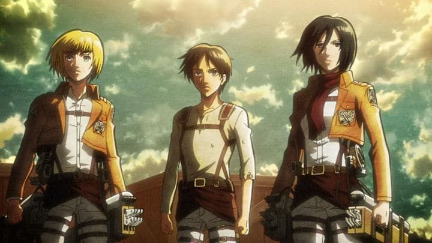

Disclaimer: This review covers the first season (episodes 1 - 25) of "Attack on Titan."There aren't many anime in history that have amassed the fanfare that "Attack on Titan" has received. Even before the anime, the manga was promoted everywhere, with the iconic first-volume cover of a giant skinless human head being a mainstay at bookstores and magazines. Whether or not it was known to be 'great' at the time is up for debate, but it was certainly popular. And when the anime adaptation was announced: this was a moment when everyone was at least vaguely familiar with the source material, and it was expected to be a hit. The extent of that success was something no one predicted.The series was animated by Wit Studio, a brand new group formed with old producers and animators from Production I.G. From the early promotional videos, it was clear this would set a new standard of animation for anime on television. And the director was Tesuro Araki, the same director behind "Death Note," "Highschool of the Dead," among other things. Ultimately, the success of "Attack on Titan" could be attributed to his direction. Even if anime fans didn't know his name before, after this, it would become a household name.Neither were prepared for that success. Wit Studio took time off for a few years after Season 1 ended, working on other series and films, before eventually returning to work on the rest of the series. Perhaps the weight of those expectations were too high, perhaps they didn't look forward to producing dozens of episodes more on a single property... or perhaps they were just stalling to let the manga writer finish more volumes. Araki didn't return to direct after the first season. Talent aside, fans likely felt drawn to "Attack on Titan"'s grim subject matter. Set in an alternate past or future, humanity has kept themselves safe from the outside world by living in cities inside massive stone walls. What are they scared of? The Titans: massive humanoid giants who seem to exist only to eat humans. Raw. And pretty quickly, one such creature, nicknamed 'The Colossal Titan" for its size, breaks through the wall, allowing smaller Titans (each still bigger than a multi-story house) to roam in and start eating. Eren Jaeger, the main character, is a young boy at the time, and screams as he's carried against his will to safety, as he watches his mother be picked up by a Titan, bitten in half in front of his eyes. Quickly, we watch Eren grow up, vowing to destroy the Titans, in a world where citizens have to live with their new situations. Food is rationed, and most citizens, Eren included, will be trained to serve in a specialized corps to attack the Titans and protect their homes, evne though it means certain death.Honestly, I was surprised by how slow "Attack on Titan" felt in the first several episodes. Dark and gory fantasy aside, we have to sit and watch Eren grow up, and train, before finally seing him and company in action against the massive giants. Eren has understandable conviction, but his blindly aggresive attitude paints him as a stereotypically annoying anime lead. His two friends are Mikasa, his foster sister (protective and silent, she can be a surprising badass, but the tone is ruined whenever we are reminded of her blind devotion to Eren), and Armin, their well-read neighbor (whinny and perpetually scared, the story has to work to give his character any meaning). World-building is interesting, but this core cast doesn't do it any favors, and pacing struggles to make sense early on. But by the time we reach the mid-point of the first season, things pick up tremendously. There are some pretty substantial plot twists that I didn't see coming. One involves a certain secret ability Eren has, which I won't spoil in this review, but it redefines the show and drives conflict among the human race for what looks to be the rest of the series. And early on, Eren is shown to have a key around his neck that unlocks the basement in hise house, long since destroyed after the first Titan attack. But he keeps having flashbacks to it... while not explained in the first 25 episodes, it's strongly hinted at as being important, giving us clues of greater mysteries behind the Titans' existence. And the show isn't afraid to kill off characters you thought would survive to the very end. It's by that point that "Attack on Titan" becomes an addictive show to binge-watch. It's at that point that director Araki's trademark "to be continued" end cards become so satisfying. The show does seem to add in filler to stretch the story longer than it needs to, and with so many questions left at the end of the first season (with years for fans to wait), that can be frustrating. But the drama in-between is interesting, and the writers are really good at ending with a great scene to make you feel pumped, at the mid-point and very end, of this season. This is "The Walking Dead" of anime.The production side is really strong, but it doesn't have much to work with. The entire color-palette is mostly brown and orange. The German-inspired army suits are well designed, but with most of the cast wearing them, it can be hard to tell the characters apart. Background settings are detailed, but mostly consist of the same cobblestone streets, brick houses and tall forest trees. The Titans themselves vary greatly, from being geniunely menacing, to being downright silly. Some look like massive humans without skin, some look like giant babies with stupid grins, and some look like giant monkeys with arms longer than their body. The Titans are as scary as they are meme-worthy, and that inconsistency can affect your enjoyment.To help make up for all of that are certain stylistic choices. For example, character outlines are bolder, making the show immediately stand out from other anime, and feeling stronger for it during intense scenes. And the show's trademark weapon, the mobility gear, is fantastic. Letting the soldiers fly around like Spider-man with steampunk grappling hooks, it makes for some of the most dynamic action scenes in anime, all the better when the camera moves through the cities as quickly as Wit Studio does. The music is also pretty grand, with one of the decades' most popular opening themes, a march that feels like a call to battle. The English dub is good, able to match the over-the-top drama required, adding to an already epic soundtrack. What other shows have had the success "Attack on Titan" has? Maybe "Fullmetal Alchemist?" "Cowboy Bebop?" "Death Note?" "Attack on Titan" rivals that of "Naruto" or "One Piece," a feat seemingly impossible for an adult-action thriller with a series-long story. That story doesn't really end with Season 1, but even by itself, "Attack on Titan" is a blast. Not as good as hype will make it seem, perhaps, but still really good. If you can stand death and violence, you'll be watching with a big smile on your face.
- "Ani" More reviews can be found at : https://2danicritic.github.io/ Previous review: review_April_and_the_Extraordinary_World Next review: review_Aura_-_Koga_Maryuin's_Last_War